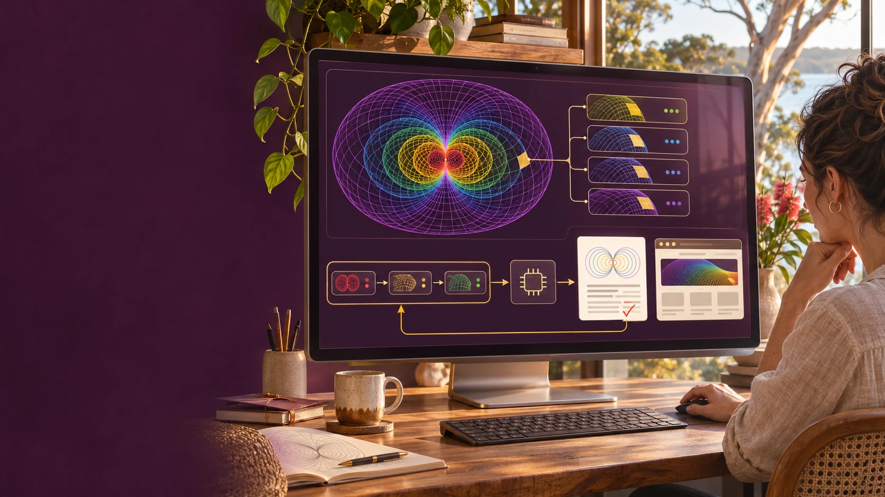
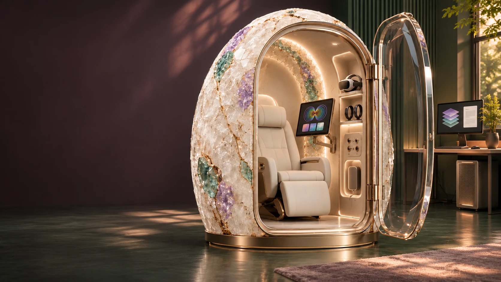
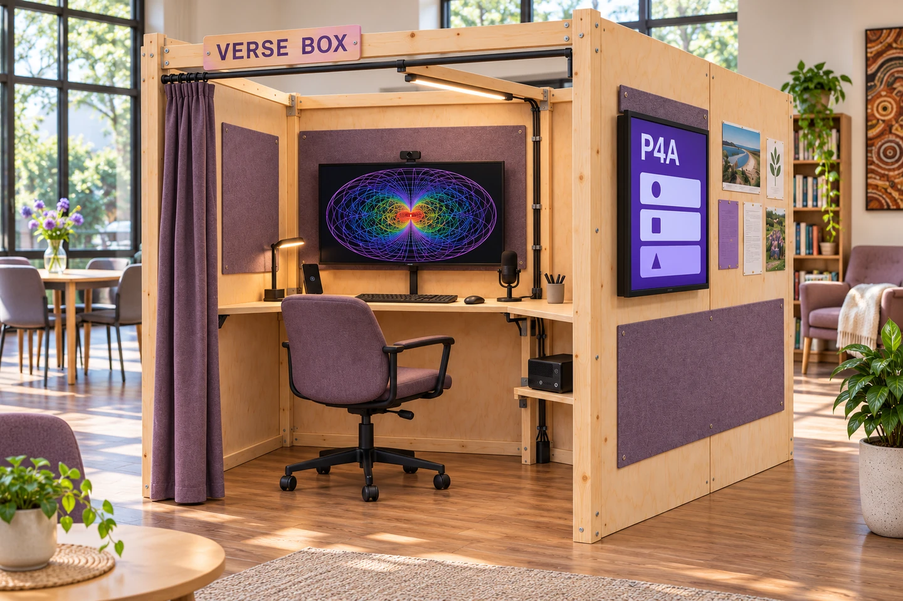

Artwork photographs and font credits
Generated artwork describes possible experiences. The photographs show actual places. Neither is evidence of a functioning Geode installation, a delivered programme or an endorsement.
Refreshed generated artwork · 11 November 2026
The current artwork was generated with the built-in image tool using the existing project references. It depicts the actual distinctions between Aura pattern programming, the seated HBOT Geode and the Verse Box workstation. The fuller logo uses small, balanced margins and is displayed without stretching. These are concept illustrations, not screenshots of completed software or photographs of installed equipment. Original generated work follows the Strange But True Public Source Licence.
Current image catalogue · Earlier artwork and superseded revisions
Aura mark

Complete generation prompt and provenance. This stylised emblem is distinct from the mathematical geometry reference.

Pattern programming and AI outputs

Pattern selection, addressed facet layers, ordered computation, documents/sites and returning corrections. Complete prompt, inputs and hashes.
Geode active workspace

New scene based on the Genesis Geode Atlas seated layout. Complete prompt, inputs and hashes · Unchanged source reference.

Verse Box community workstation

New scene based on the Verse Box supplied single-skin layout, with the canonical Aura geometry as a screen reference. Complete prompt, inputs and hashes · Unchanged supplied reference.

The original source images remain available for comparison, with their existing project rights and source identities and hashes. The settings guide explains the separate physical setups.
Real photographs
Main Beach from Point Lookout, 2014. Photograph by S. Newrick, CC BY-SA 4.0, via Wikimedia Commons.
.JPG){kind=link}
Cleveland Point Light, 2016. Photograph by Kgbo, CC BY-SA 4.0, via Wikimedia Commons.

Commons-provided 1280px files were copied unchanged from the existing campaign project. Responsive display may crop them. These photographs retain their own Creative Commons licences and are not relicensed under Strange But True. Full photo provenance and hashes.
Fonts
Archivo: Copyright 2020 The Archivo Project Authors, distributed under the SIL Open Font License. JetBrains Mono: Copyright 2020 The JetBrains Mono Project Authors, distributed under the SIL Open Font License.
Spatial source preview
The memory and action diagram is a reconstruction of the actual source region in LifeLogging Part 1, Sheet1 B97:H136. It is not a generated psychological model. See the matrix reading guide for limits and source locations.